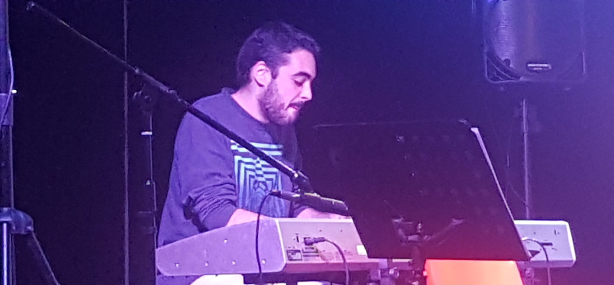

7th Pyramid
My main music alias, focused on Drum & Bass and other 140+ BPM genres.

Mark II
Secondary alias dedicated to House music.

Other music projects
I have a pretty long story with "Maestro Gombau" public music school in Getafe. I studied music and keyboard playing for 9 years, playing in bands for 6 of those (at least 4 in Salida de Emergencia). I took a 4 year break to get more into electronic music making, and I came back as a keyboardist to this music school in September 2019.
I played the keyboards (mainly pianos and EPs, but also some organs and synth pads here and there) in a pop/country/funk band there for two years until the band was dissolved in 2021.
I attended the Utrecht Summer School course on Film Music for Beginners, where we learned how to get started in film music arrangements. During the practical hours we worked on the music in some scenes, and these are mine:
Scene 1: This is the kind of thing I know how to do: sad/tense ambiences with electronic sequences and strings.
Scene 2: With this other one I wanted to unleash some breakbeat force and decided to go for a dance/film hybrid sound.
Personal logo
Designs for GUL UC3M
I've worked on several posters for the UC3M Linux User Group (GUL in Spanish) for different events. They all follow a modern, flat aesthetic, and also take elements from the common design language used throughout GUL design material (as much as we can), like the Lato font and the material design guidelines.
{kind=link}
{kind=link}
{kind=link}
{kind=link}